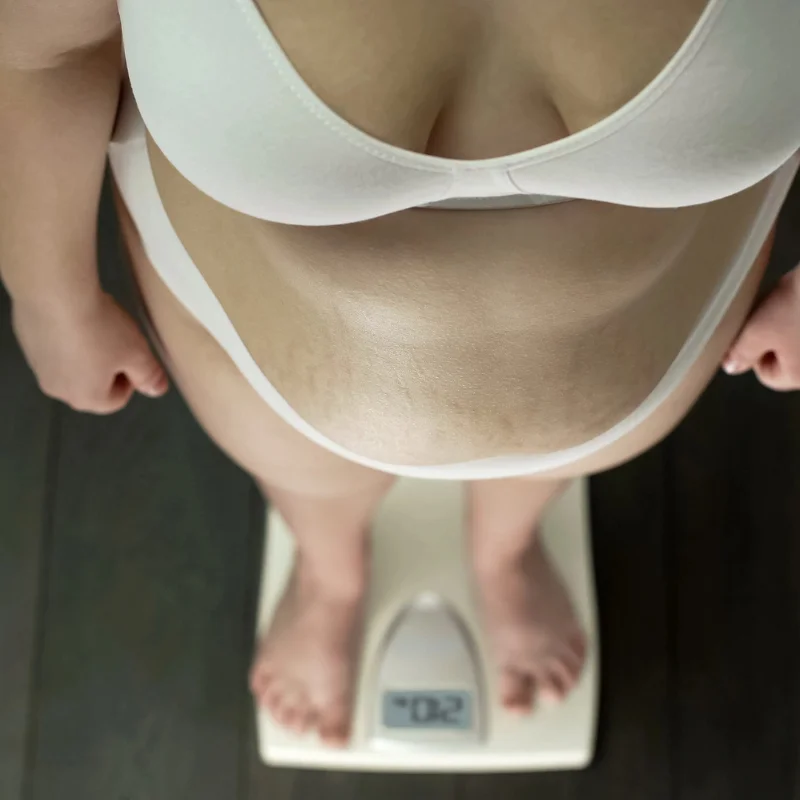

Metabolismus: co to je a jak ovlivňuje vaši váhu
Slovo „metabolismus" slyšíte všude – v článcích o hubnutí, v reklamách na doplňky stravy, v rozhovorech s kamarádkami. Ale co to vlastně znamená? Proč někteří lidé jedí hodně a netloustnou, zatímco jiní přiberou jen při pohledu na dort?
V tomto článku si jednoduše a srozumitelně vysvětlíme, co metabolismus je, jak funguje, co ho ovlivňuje a – hlavně – jestli se dá nějak zrychlit.

Co je metabolismus
Metabolismus je souhrn všech chemických reakcí, které probíhají ve vašem těle, aby vás udržely naživu. Zní to složitě, ale v praxi to znamená dvě hlavní věci:
- Katabolismus – rozklad látek na jednodušší části za uvolnění energie (např. trávení jídla, spalování tuků)
- Anabolismus – stavba nových látek za spotřeby energie (např. růst svalů, hojení ran)
Když lidé mluví o „rychlém" nebo „pomalém" metabolismu, obvykle mají na mysli rychlost, jakou tělo spotřebovává energii – tedy kolik kalorií spálíte za den. A to se dá rozložit na několik složek.
Složky celkového energetického výdeje
| Složka | Podíl na výdeji | Popis |
|---|---|---|
| Bazální metabolismus (BMR) | 60–70 % | Energie na udržení základních funkcí v klidu |
| Termický efekt potravy (TEF) | ~10 % | Energie na trávení a vstřebávání jídla |
| Fyzická aktivita | 15–30 % | Cvičení i běžný denní pohyb (NEAT) |
Největší díl tedy tvoří bazální metabolismus – a právě ten je klíčem k pochopení toho, proč někteří lidé „spalují" rychleji než jiní.
Co ovlivňuje rychlost metabolismu
Rychlost metabolismu není čistě genetická záležitost. Ovlivňuje ji řada faktorů, z nichž některé můžete změnit a jiné ne:
Faktory, které neovlivníte
- Věk – metabolismus se zpomaluje přibližně o 1–2 % za dekádu po 30. roce věku
- Pohlaví – muži mají obvykle rychlejší metabolismus díky vyššímu podílu svalové hmoty
- Genetika – ovlivňuje asi 5–10 % rozdílů v metabolismu mezi lidmi
- Výška – vyšší lidé mají větší tělo a tedy vyšší bazální metabolismus
Faktory, které ovlivníte
- Svalová hmota – svaly spalují i v klidu výrazně více energie než tuk. Každý kilogram svalů navíc zvyšuje denní výdej o přibližně 13 kcal.
- Fyzická aktivita – jak cílený trénink, tak běžný denní pohyb (NEAT)
- Strava – pravidelné stravování a dostatečný příjem bílkovin udržují metabolismus aktivní
- Spánek – chronický nedostatek spánku zpomaluje metabolismus o 2–8 %
- Hydratace – studie ukazují, že vypití 500 ml studené vody zvyší metabolismus o 30 % na 30–40 minut
Jak zvýšit bazální metabolismus
Zrychlení metabolismu není o zázračných čajích nebo tabletách. Je to o dlouhodobých návycích, které mění způsob, jakým vaše tělo pracuje s energií.
1. Posilujte
Silový trénink je nejúčinnější způsob, jak zvýšit bazální metabolismus. Více svalů = více spálených kalorií v klidu. Stačí 2–3 tréninky týdně zaměřené na hlavní svalové skupiny.
2. Jezte dostatek bílkovin
Bílkoviny mají nejvyšší termický efekt ze všech makroživin – tělo spotřebuje 20–30 % energie z bílkovin jen na jejich trávení (u tuků je to 0–3 %, u sacharidů 5–10 %). Bílkoviny navíc chrání svalovou hmotu při hubnutí.
3. Nehladověte
Příliš přísná dieta (pod 1 200 kcal u žen, 1 500 u mužů) vede k adaptivní termogenezi – tělo zpomalí metabolismus, aby šetřilo energii. Paradoxně tak drastická dieta hubnutí v dlouhodobém horizontu zpomaluje.
4. Spěte dostatek
7–9 hodin kvalitního spánku udržuje hormony v rovnováze a metabolismus v normálu. Nevyspalé tělo se brání úbytku energie.
5. Pijte studenou vodu
Tělo vynaloží energii na zahřátí studené vody na tělesnou teplotu. Efekt není obrovský, ale každá kalorie se počítá.
6. Hýbejte se přes den
NEAT (Non-Exercise Activity Thermogenesis) – denní pohyb mimo trénink – může tvořit rozdíl 500–800 kcal denně mezi sedavým a aktivním člověkem. Choďte po schodech, stůjte u stolu, procházejte se při telefonování.
Mýty o metabolismu
„Mám pomalý metabolismus, proto tloustnu"
Studie ukazují, že rozdíly v bazálním metabolismu mezi lidmi stejného věku, pohlaví a složení těla jsou překvapivě malé – obvykle do 200–300 kcal denně. Skutečné metabolické poruchy (např. hypothyreóza) jsou odpovědné za nabrání maximálně 2–5 kg. Pokud máte podezření na poruchu štítné žlázy, nechte si ji vyšetřit.
„Časté jídlo zrychluje metabolismus"
Mýtus. Termický efekt potravy závisí na celkovém množství snědeného jídla, ne na počtu jídel. 3 velká jídla a 6 malých jídel se stejným celkovým příjmem mají stejný termický efekt. Jezte tak často, jak vám to vyhovuje.
„Některé potraviny spalují tuk"
Grapefruit, zelený čaj, chilli – ano, mohou mírně zvýšit metabolismus, ale efekt je minimální (řádově 10–20 kcal denně). Na hubnutí to nestačí. Zaměřte se na celkový kalorický příjem a pohyb.
Shrnutí
- Metabolismus = souhrn chemických reakcí, které přeměňují jídlo na energii
- Největší podíl energetického výdeje tvoří bazální metabolismus (60–70 %)
- Metabolismus ovlivňuje věk, pohlaví, svalová hmota, pohyb a spánek
- Nejúčinnější způsob, jak metabolismus zrychlit: silový trénink + dostatek bílkovin
- Drastické diety metabolismus zpomalují
- Rozdíly v metabolismu mezi lidmi jsou menší, než si myslíte
Chcete vědět, kolik kalorií vaše tělo spaluje v klidu? Přečtěte si náš podrobný článek o bazálním metabolismu s kalkulačkou a vzorci. A nezapomeňte si spočítat BMI.